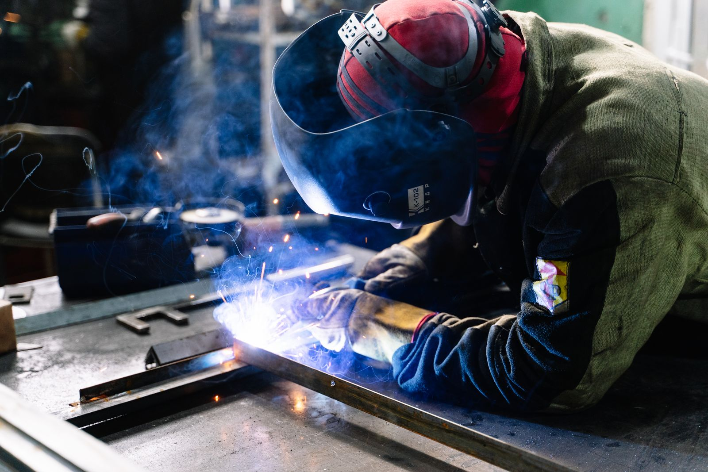

Tubería industrial
Soldadura, prefabricación de tramos y montaje en obra. Colaboro con empresas que necesitan incorporar un soldador a su equipo para un proyecto.

Soldador autónomo en Zaragoza
Prefabricación, montaje y apoyo a equipos de obra. También realizo trabajos de soldadura a domicilio para empresas y particulares.
Servicios
Soldadura, prefabricación de tramos y montaje en obra. Colaboro con empresas que necesitan incorporar un soldador a su equipo para un proyecto.
Fabricación a medida de puertas, verjas, cerramientos, estructuras y utillajes. También realizo reformas y modificaciones de piezas metálicas.
Valoro reparaciones de remolques afectados por corrosión, colectores de escape agrietados, estructuras deterioradas y tuberías con fugas.
Materiales: acero, acero inoxidable, aluminio, cobre y otras aleaciones.
Experiencia
Llevo 22 años trabajando en el metal. He participado en proyectos en fábricas, refinerías y centrales eléctricas, tanto en Zaragoza como fuera.
Ahora trabajo por cuenta propia. Mi actividad principal es colaborar con empresas de montaje industrial que necesitan apoyo en soldadura de tubería. También atiendo encargos de particulares, desde fabricar una verja hasta recuperar una pieza dañada.
Contacto
Atención 24/7. Consulta por WhatsApp la disponibilidad para desplazamientos y trabajos urgentes.